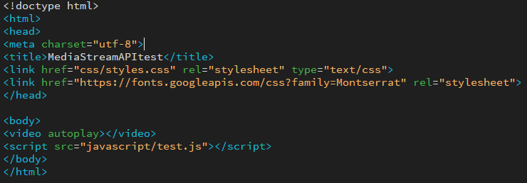
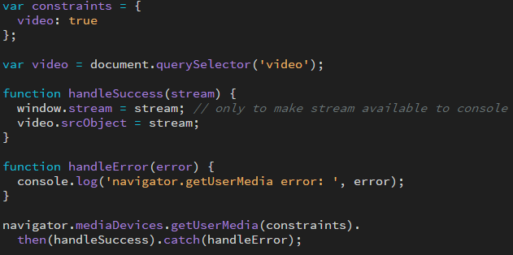
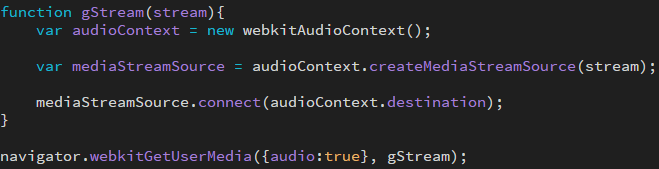
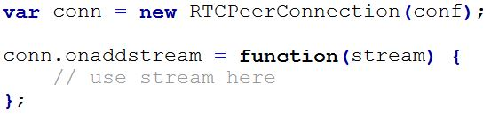

WebRTC is formed of several individual JavaScript APIs and protocols that work together to form the functionality of the software. Internet Engineering Task Force (IETF) standardise the protocols by Real-Time Communication in WEB-browsers Working group while the APIs are standardised by the Web Real-Time Communications Working Groupe of the World Wide Web Consortium (W3C).
This API, also known as getUserMedia() (gUM) is used by developers to access external device such as web camera and microphone and even the screen itself, from the web browser. It also manages the selection of user devices connected to the computer as there may be multiple web-cameras and microphones connected to the device. Another key feature of this API is it always ask the user for permission to use its devices or to fetch a strea.
This API can be demonstrated with a simple HTML page. It’ll show a simple video box and will ask the user’s for permission to use the selected camera and display a live stream from it. Click here to view demo. Below are screen shots of the HTML and JavaScript used to make the demo.
 As I previously stated, the gUM can be also be used to get input from a microphone. That means we can use the method to provide a source node for web audio. Below is a simple JavaScript function used to get audio from devices.
Click here to see a more advance exapmle where the gUM is used to get the audio from the device which can be recorded and saved to the device.
gUM can be used to get data coming directly from the screen and not the camera or the mic (audio) which is also known as screencapture and can be useful in many way such as sharing your screen with other to demonstrate something in real time. An example of this can be seen here at html5-demos.
The RTCPeerConnection is the main API that provides all the communication capabilities for the WebRTC. It represents a WebRTC connection between a local computer and a remote peer while monitoring and maintaining the connection and breaking the connection when it’s no longer needed. It used Session Description Protocol (SPD) to negotiate the session’s parameters as there is no signalling in WebRTC, executes Interactive Connectivity Establishment (ICE) NAT traversal to deal with the process of connecting media though NATs, and encodes and decodes the media being send over the network.
'Under the hood', RTCPeerConnection does a lot such as:
The RTCPeerconnection can be simply created in a JavaScrip document. Below is a simple RTCPeerConnection JavaScript object.
An example of the RTCPeerConnection can also be seen here at https://webrtc.github.io/samples/src/content/peerconnection/pc1/
The RTCDataChannel works with the RTCPeerConnection API and opens a channel between two peers where arbitrary data can be sent and received. This is very similar to the WebSocket API so that developers familiar with using WebSockets could also use a similar API for RTCDataChannel. However, what seperates RTCDataChannel is:
RTCDataChannel is created by using the var datachannel = peerconnection.createDataChannel(label); constructor. A more advance exmaple of this can been seen here. Below is a simple example of the structure of the API.
{kind=link}
{kind=link}
{kind=link}
{kind=link}
{kind=link}